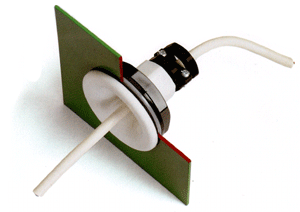

|
Firmaet Olaf Johannsen blev grundlagt i 1964 som et privat firma. Omlagt efter 10 år til Olaf Johannsen ApS.
Produktionen var dels elektroniske komponenter, dels udvikling -og produktion af kabel tilbehør. Fra 1983 var firmaets primære område, produktionen af lav volts kabel tilbehør.
|

|
|
1970. Olaf Johannsen ApS udvikler elektronisk udstyr i Sønderborg. Blandt andet udvikles en væske niveau detektor. Et elektronisk niveaukontrolsystem specielt konstrueret til brug i forbindelse med brandfarlige væsker, især benzin og olie.
Niveaukontrolsystemet består af en elektronisk del og en niveauføler uden bevægelige dele. Elektronikdelens udgangsrelæ skifter, når strømmen i den egensikre følerkreds ændrer sig. Over udgangsrelæet styres pumper, ventiler, alarmkredse m.v. Elektronikdelen overvåger automatisk for fejl i følerkredsen.
1972. Udvikling af kulilte meter, kulilte/ilt måler (udstødnings analysator) Produktionen flyttes til nye bygninger.
1982. Olaf Johannsen ApS starter import:
Eliwell Agentur, Eliwell termostater og følere.
Måle- og reguleringsudstyr til industrielle køle- og varmeanlæg, apparater med digitalvisning, til panelmontering. Proceskontroludstyr.
Udover termostater, importeres også elektroniske termometre og fjern- og digital termometre.
1991. Firmaet udvikler en ny og forbedret kabelforskruning, som er mere sikker end andre kabelforskruninger på markedet.
Kabelforskuningen har en unikt designet bøjle. Bøjlen kan vendes, hvilket tillader et større spændområde i kabeldiametre.
1992. Flere forskruninger i forskellige størrelser udvikles.
1996. Planforsænket kabelgennemføring udvikles og sættes i produktion.
1999. Kabelsamlemuffe RE325 udvikles og sættes i produktion.
2000. Olaf Johannsen ApS sælger nu løgringspakninger, som benyttes hvis en forbindelse mellem et elektronisk apparat og et kabel skal være vandtæt.
2001. Udvikling og produktion af kabelforskuninger med metrisk gevind. M-gevind.
2003. Olaf Johannsen ApS kommer online.
2006. Ny version af samlemuffen RE325. Nu IP68 5 bar for bevægelige kabler. IP67 for stive kabler.
|